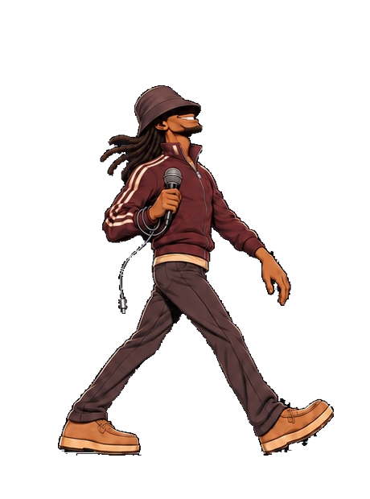

Sound Clash · Feedback · art-source
Four-key walk loop
Movement test — not approved · not in gameplay
A/B legs — flagged. Both contact keys put the boots in the same places (front 367 vs 377 px, rear 122 vs 120, same sole tilts), so the drawing never swaps the legs. Alternation is not evidenced, and the two pass keys do not mirror each other either (support foot 218 vs 168 px against a body centre of 230).
Foot sliding — inherent to 4 keys. Between keys the stance foot jumps 149 px (A→PASS A) and 209 px (B→PASS B) with nothing in between. The step itself is 245–257 px — the distance between the feet at contact — so that is the root motion a game needs to cancel the slide.
Mic hand — right. One mic, one cable, right hand in all four keys. See four-key-note.md.

What was measured
| Key | Drawn height | Scale | Front boot | Rear boot |
|---|---|---|---|---|
| 01 CONTACT A | 510 px | 0.902 | x 367 · tilt −0.49 · floor | x 122 · tilt +0.08 · floor |
| 02 PASS A | 502 px | 0.916 | x 218 · tilt +0.01 · floor | x 137 · lifted 51 px |
| 03 CONTACT B | 521 px | 0.883 | x 377 · tilt −0.59 · floor | x 120 · tilt +0.05 · floor |
| 04 PASS B | 510 px | 0.902 | x 209 · lifted 49 px | x 168 · tilt +0.08 · floor |
- Scale: the sheet's figures are drawn 502–521 px tall, so each key is normalised to a 460 px figure before comparison; the raw sheet is not one scale.
- Floor: soles pinned to y = 566 in a 460 × 620 panel; the lifted feet in the pass keys sit 49–51 px clear, which is the only real vertical information in the sheet.
- Duplicates: no pair is a copy — the closest is CONTACT A vs CONTACT B at mean diff 30.9 (next 46.8 for PASS A vs PASS B); the other pairs sit at 61–64.
- Alternation: not evidenced. A and B hold the same boots within 10 px with the same sole tilts, so both contact keys read as the same leg forward. The pass keys do not mirror either: PASS A supports under the body (x 218), PASS B supports 62 px behind (x 168).
- Foot sliding: the stance foot travels −149 px (A→PASS A) and −209 px (B→PASS B) — a 60 px mismatch between the two halves — while the step (feet apart at contact) is 245–257 px. Played in place with no root motion and no in-betweens, the planted foot snaps backwards once per key.
- Mic: one mic, one cable, right hand in every key — no redraw needed.
Why the loop looks stepped
- Only four poses exist. Playback holds each key (6 frames at 24 fps by default, 1.0 s per cycle) and cuts hard; nothing is interpolated or crossfaded, so the pops are the sheet's.
- The wrap from 04 PASS B back to 01 CONTACT A is a hard cut like any other.
- No ground shadow and no planted-foot lock exist in the source, so the floor line here is an alignment aid, not evidence of contact.
- At 460 px ≈ 1.8 m, a 251 px step is ≈0.98 m; the 1 s cycle above implies ≈2.0 m/s, which is brisker than the art reads. A 2 s cycle (12 fps holds) lands nearer 1.0 m/s.